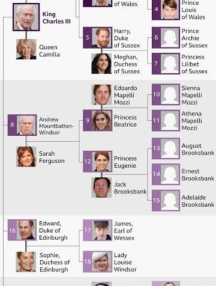
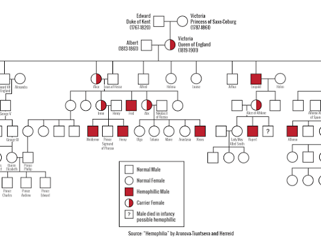
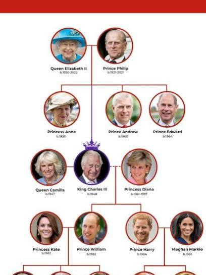
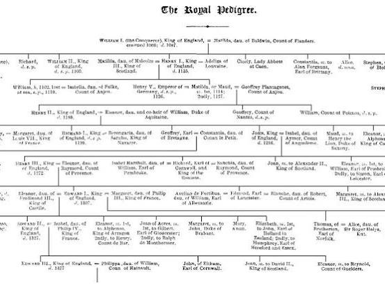
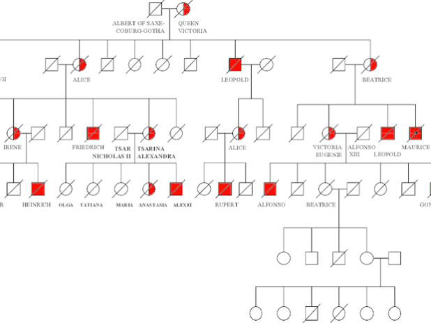
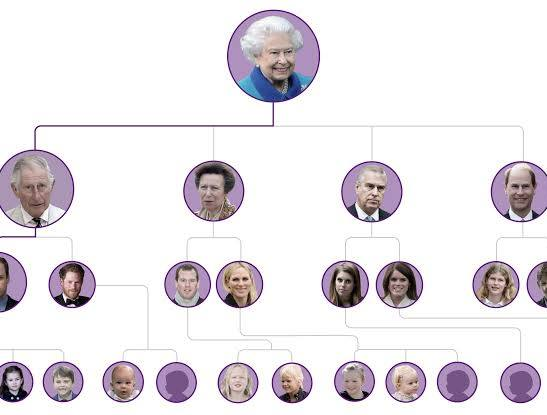
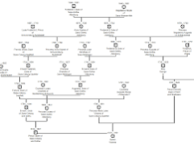

Conversation 752
Royal Pedigree
Prompt 1 · You
royal pedigree
Response 1 · Google AI Mode
Royal pedigree can refer to three entirely distinct concepts depending on your context: the genealogy of monarchy lineages, the famous genetic medical pedigree of Queen Victoria's hemophilia, or a comparison between the popular dog food brands Royal Canin and Pedigree.







1. Monarchical Royal Pedigrees
The British Royal Family Tree stretches across more than 1,200 years of history, tracking 63 monarchs across distinct royal houses.
Britroyals +1
- The Current House: The modern lineage belongs to the House of Windsor, officially established in 1917 under King George V.
- The Throne Today: Following the historic 70-year reign of Queen Elizabeth II, King Charles III currently sits on the throne.
- Line of Succession: The direct path to the crown passes next to Prince William (The Prince of Wales), followed vertically by his children: Prince George, Princess Charlotte, and Prince Louis.
 BBC +3
BBC +3
2. The Medical & Genetic Pedigree
In science and medicine, the "Royal Pedigrees" are studied as textbook examples of X-linked recessive genetic inheritance.
- The Royal Disease: Queen Victoria was a spontaneous carrier of Hemophilia B (a rare blood-clotting disorder).
- European Spread: Through the strategic marriages of her children, the genetic pedigree spread the condition into the royal families of Russia, Spain, and Germany, famously affecting Tsarevich Alexei of Russia.
 YouTube·Mortal Faces
YouTube·Mortal Faces
3. Pet Care: Royal Canin vs. Pedigree
If you are looking for pet nutrition, "Royal" and "Pedigree" represent two of the world's most recognizable dog food brands, though they serve very different market tiers.
- Royal Canin: Focuses on premium, breed-specific, and veterinary health-oriented formulas tailored to a dog's precise size, age, and medical history.
- Pedigree: Operates as a widely accessible, budget-friendly everyday grocery brand focusing on essential, universal nutrition.
To give you the exact details you need, which royal pedigree were you looking for?
- A detailed breakdown of the current British line of succession
- Historical information on how all European royal families are related
- The scientific genetics behind Queen Victoria's lineage
- A product comparison for your pet
Source links preserved from this response
- British Royal Family Tree
https://en.wikipedia.org/wiki/Family_tree_of_the_British_royal_family - Britroyals
https://britroyals.com/ - BBC
https://www.bbc.com/news/articles/c867plj4vgqo - YouTube · Mortal Faces
https://www.youtube.com/watch?v=rI8PvFC6FsE&t=480